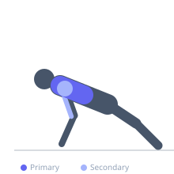

Exercise guide / Wide-Grip Push-Up
Wide-Grip Push-Up
The wide-grip push-up is performed with hands placed wider than in a standard push-up. The wider grip reduces triceps involvement and increases the range of motion for the pectoral muscles, shifting more demand to the chest. It is a good bodyweight variation for those who want to emphasize chest development.
Primary muscles
pectoralis major sternal
pectoralis major clavicular
Secondary muscles
deltoid anterior
triceps lateral head
Stabilizers
transverse abdominis
Equipment
No Equipment (Bodyweight)


Starting position
- High plank position with hands placed 1.5 to 2 times shoulder width apart, fingers angled slightly outward. Body forms a straight line from head to heels.
Setup
- No equipment needed. Wider hand placement increases pectoral stretch but also increases shoulder joint stress — avoid excessively wide placement.
Steps
- Brace the core and maintain a rigid plank position.
- Lower the body by bending the elbows outward until the chest is close to or touching the floor.
- Push back up to the starting position, extending the arms fully.
Coaching cues
- Feel the chest stretch at the bottom of each rep
- Press outward into the floor as you push up
Breathing
- Inhale on descent, exhale on the push.
Range of motion
- Full range, chest nearly to the floor.
Tempo
- 2-0-1-0
Common mistakes
- Placing hands so wide that shoulder impingement occurs
- Letting hips sag
Safety
- If shoulder discomfort occurs at a very wide grip, narrow the hand position
Training
- hypertrophy: 10–20 reps
- endurance: 20–40 reps
- hypertrophy: 3–4 sets
- endurance: 2–4 sets
- Rest: {'hypertrophy': 60, 'endurance': 30}